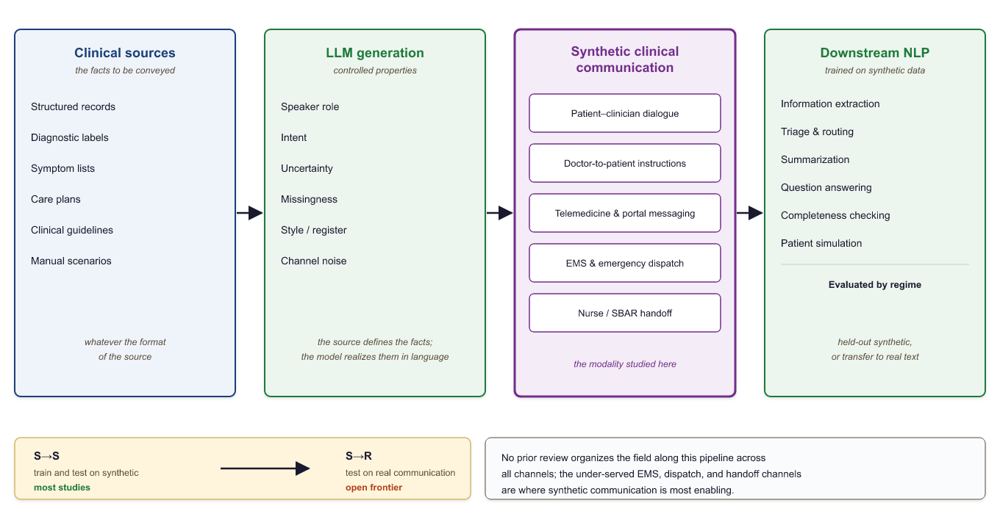
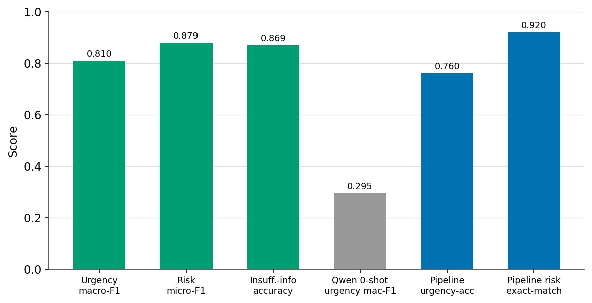
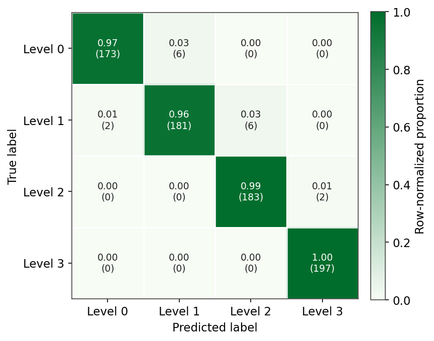
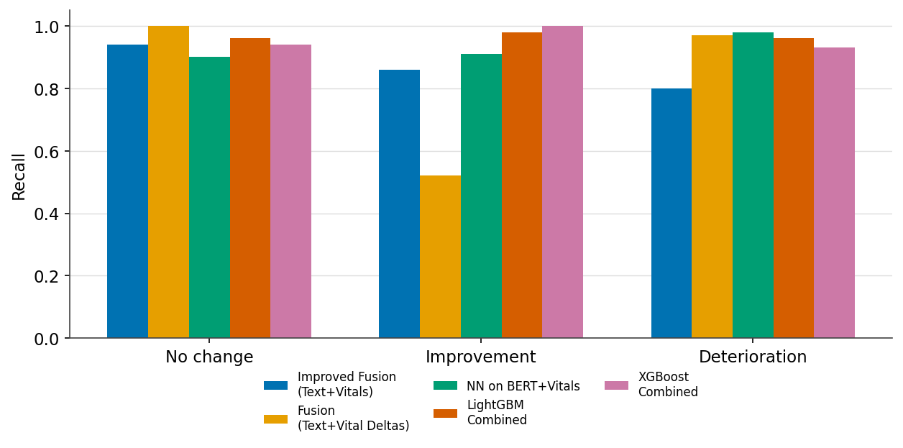
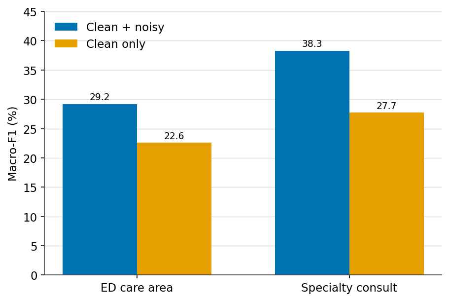
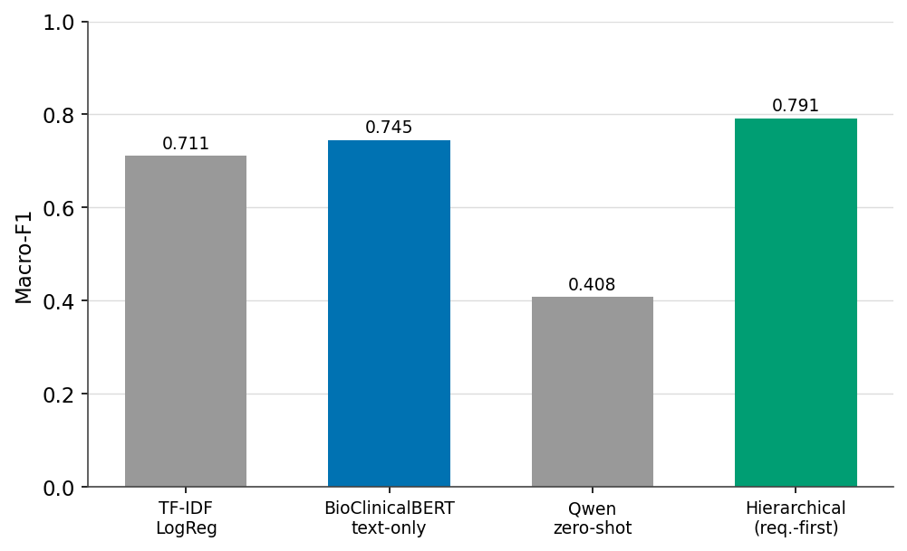

Clinical Communication Processing with Models Trained on LLM-Generated Synthetic Data:
A Framework, Structured Survey, and Ten Application Case Studies
1 School of Computer Science, Faculty of Sciences, Holon Institute of Technology (HIT), Holon, Israel · 2 Intelligent Systems, Afeka Academic College of Engineering, Tel-Aviv, Israel
Abstract
A great deal of clinical value is conveyed not through structured records but through communication: the spoken and written exchanges in which patients describe symptoms, clinicians reason and give instructions, ambulances hand over to emergency departments, and nurses pass on a shift. Such language differs from tabular data because meaning depends on speaker role, intent, causality, uncertainty, omission, and channel noise, and healthcare natural language processing (NLP) must interpret information as it is conveyed rather than as it is coded. Learning to do so requires large, diverse, and well-annotated corpora of clinical communication, which are scarce: authentic exchanges are private, fragmented across channels, and costly to annotate. Large language models offer a way forward, because they can transform structured or documentary clinical sources, such as records, diagnostic labels, symptom lists, or care plans, into written and transcribed spoken communication for downstream models.
Our central contribution is an organizing framework for this emerging area: a source-to-communication-to-model pipeline paired with a taxonomy of clinical-communication channels, which we develop into a structured narrative survey organized by source representation, communication form and participants, generation method, and downstream task. We instantiate and stress-test the framework through ten application case studies that build clinical NLP systems for communication channels and languages where labeled real-world data is scarce, restricted, or absent, spanning EMS pre-arrival reports, nurse handoffs, and patient-portal triage, and showing that synthetic communication can bootstrap systems that could not otherwise be trained. Recurring observations include the competitiveness of fine-tuned encoder models over evaluated zero-shot baselines and the value of deliberately degraded communication for robustness. The ten studies span a graded real-world-grounding spectrum: one augments labeled real training data with synthetic critical cases and evaluates on authentic patient-authored text (a medication-question classifier, our real-test augmentation anchor, an R+S→R result); four seed generation from real structured data; and the rest evaluate on held-out synthetic communication. None of the ten is a pure train-on-synthetic, test-on-real (S→R) demonstration, so establishing that evidence is the clearly marked next step rather than a hidden gap. We conclude that synthetic clinical communication is becoming a practical research resource; establishing it as reusable clinical infrastructure will build on authentic-data transfer together with attention to safety, privacy, and external validation.
1 Introduction
Clinical care runs on communication. Before any note is filed, a patient describes symptoms, a paramedic radios a pre-arrival report, a nurse hands off a shift, a dispatcher triages an emergency call, and a clinician gives follow-up instructions. These exchanges carry the reasoning, urgency, and intent that downstream systems most need, yet they are captured (when captured at all) as noisy, unstructured, privacy-sensitive text. As data-hungry machine learning methods have matured, so has the demand for large, diverse, annotated corpora of clinical communication.
The stakes are high, because much of the clinically decisive information in medicine never reaches a structured field. The patient history alone yields the correct diagnosis in roughly four out of five cases[84], and a large share of the electronic health record is free text whose notes materially improve prediction and phenotyping[88]. This communicative layer is also fragile: communication failures are among the leading contributors to sentinel events[86] and were implicated in thirty percent of malpractice cases, 1,744 deaths, and 1.7 billion dollars in cost over five years[85]. Information is routinely lost at paramedic-to-emergency-department handover[87] and even in the language of an emergency call, where delayed recognition of cardiac arrest lowers survival[90]. As patient-portal messaging surges and adds to documentation burden[89], the value carried in clinical communication is both larger and more at risk than the structured record suggests.
Collecting and sharing such corpora remains difficult. Clinical communication is protected health information; de-identification is imperfect and costly; institutional data governance constrains access and reuse; expert annotation is slow and expensive; and clinically important phenomena such as rare diseases and adverse events are, by definition, underrepresented. These barriers slow progress and limit the reproducibility of clinical NLP research.
The emergence of instruction-following LLMs has changed what is possible. Given a scenario, a schema, or a few examples, an LLM can render clinically plausible narratives, conversations, messages, and reports on demand, optionally carrying their own annotations. Importantly, the source defines the intended facts and the generator realizes them in language; the model does not invent clinical truth. This capability turns synthetic clinical communication from a privacy fallback into a controllable resource for building and evaluating healthcare NLP.
Synthetic clinical communication is artificially generated natural-language content representing written or spoken exchanges among participants in healthcare: patient narratives, dialogues, messages, instructions, handoffs, emergency reports, and transcribed radio or telephone communication in which clinically relevant information is conveyed through contextual, informal, incomplete, uncertain, or noisy language. The clinical content used to generate it may originate from structured records, diagnostic labels, symptom lists, notes, care plans, guidelines, or manually constructed scenarios; these are generation inputs, not the downstream textual modality studied here. Inclusion is therefore determined by the generated language and its downstream use, not by the format of the source. The organizing pipeline is accordingly clinical source → LLM-generated communication → downstream healthcare NLP model (Figure 1). Our object of study is that final stage: NLP systems that process clinical communication and are trained, wholly or in part, on such synthetic data. The word synthetic qualifies the training data, not the real communication these systems are ultimately built to serve.

Within this scope we include patient–clinician conversations, doctor-to-patient instructions, telemedicine consultations, paramedic-to-hospital and emergency-dispatch traffic, nurse and clinician handoffs, and patient-portal messaging, whatever the source from which they are generated. We exclude work whose output is synthetic structured or tabular records, signals, or images; internal documentation with no communicative function; and studies in which an LLM only classifies existing text without generating communication. A discharge summary, for instance, is in scope when it functions as communication to the patient or the next provider, and out of scope when treated purely as an archival record. Likewise, an LLM that generates portal messages for a triage classifier to learn from is in scope, whereas an LLM that only labels existing real messages is not, since it produces no communication.
This paper is a structured narrative survey complemented by application case studies, organized to answer seven questions: (RQ1) which forms of written and transcribed spoken clinical communication are generated with LLMs; (RQ2) which clinical source representations are transformed into them; (RQ3) which communication properties, such as role, intent, uncertainty, missingness, style, and noise, are controlled during generation; (RQ4) which downstream tasks use the result for training, augmentation, or evaluation; (RQ5) how clinical fidelity, communication realism, label quality, privacy, and downstream utility are evaluated; (RQ6) what evidence exists that models trained on synthetic communication generalize to authentic communication; and (RQ7) which reusable design patterns and failure modes recur across the case studies. Our primary contribution is an organizing framework, the source-to-communication-to-model pipeline paired with a taxonomy of clinical-communication channels, around which a fragmented literature is unified; within it we survey recent generation and evaluation methods, instantiate and stress-test the framework through ten application case studies that build clinical NLP for communication channels and languages where labeled real-world data is scarce, restricted, or absent (demonstrating feasibility where models could not otherwise be trained), and distill from them reusable design patterns and open problems in an emergent field. Because these systems ultimately mediate communication with patients and care teams, the work speaks directly to human-centered health informatics: triage that respects how patients phrase their symptoms, handoffs that protect the next clinician, and portals that route messages safely.
Existing reviews cluster into two camps that leave our target uncovered. Broad "LLMs in medicine" surveys treat text generation as one application among many[23,24], while synthetic-clinical-text reviews pool clinical notes, tabular EHR, and time series under generic utility and privacy lenses[19,20,21,22,36]. Even the dedicated survey of medical-dialogue generation frames generated dialogue as a conversational system's output rather than as reusable synthetic training data[25,26], and stops at the patient-provider chat channel. No prior review organizes the field around clinical communication as a modality spanning patient–clinician dialogue and ambient scribing[28,33,34,35], doctor-to-patient instructions, telemedicine, EMS and SBAR handoff, emergency dispatch[38], and patient-portal messaging, nor pairs that taxonomy with concrete application studies and a channel-specific privacy analysis[31]. This paper fills that gap: it unifies these fragmented channels, maps which datasets are real versus LLM-synthetic, and shows through application studies how synthetic clinical communication trains and evaluates downstream NLP where real conversational data is scarce, restricted, or absent, notably the under-served EMS, dispatch, and handoff channels. The closest prior work is a typology of synthetic clinical dialogue datasets[83], but it organizes by generation method and treats dialogue as a single undifferentiated category, without the channel structure, the under-covered EMS, dispatch, handoff, and portal channels, or the paired application studies offered here. Table 1 sets this survey against the closest prior reviews.
| Review | Channels covered | Maps real vs synthetic? | Own application studies? |
|---|---|---|---|
| Loni et al. [21] | Text as one generic modality | Partial | No |
| Ibrahim et al. [22] | Text among several modalities | No | No |
| Liu et al. [25] | Patient–clinician dialogue only | No | No |
| Rujas et al. [36] | Review of reviews; no channel structure | No | No |
| Bedrick et al. [83] | Dialogue and counseling only | Yes (typology) | No |
| This survey | Patient–clinician, doctor-to-patient, telemedicine and portal, EMS, dispatch, SBAR handoff | Yes | Yes (10 studies) |
2 Literature Review
This section reviews the field in four parts: the modalities of clinical communication and the tasks they support (2.1); how large language models generate synthetic clinical communication (2.2); how such data is evaluated (2.3); and what the literature reports, organized by downstream task (2.4).
Scope and method. This is a structured narrative review rather than a systematic one. We gathered work through targeted searches of arXiv, PubMed/MEDLINE, and the ACL Anthology, supplemented by forward and backward citation tracing and by browsing recent issues of the venues where this work concentrates (npj Digital Medicine, JAMIA, JMIR, Nature Medicine, and the ACL family). The emphasis is on 2020 through 2026, the period in which instruction-following LLMs made open-ended clinical text generation practical. A study is included when its LLM-generated output is a communication artifact used by a downstream model, under the inclusion rule stated in Section 1; work whose output is synthetic tabular records, signals, or images, or which only classifies existing text without generating communication, is excluded. The application studies in Section 3 were selected from graduate coursework to span the communication channels below, and are presented as feasibility demonstrations rather than a systematic sample.
Efforts to unlock the value in clinical communication predate synthetic data. Ambient systems that turn a recorded consultation into a note, together with their benchmarks and shared tasks[27,33,34,58], are now moving into practice as clinician-facing scribes[93]. Information extraction has been applied to paramedic narratives[94] and, in emergency medicine more broadly, is the subject of dedicated reviews[95,96]; machine learning on the audio and language of emergency calls has improved dispatcher recognition of cardiac arrest in a randomized trial[91,92]; and patient-portal messages are increasingly triaged and routed automatically[97]. What these lines share is a dependence on scarce, privacy-restricted real communication for training and evaluation, the bottleneck that synthetic generation, the subject of this survey, sets out to relieve.
2.1 Clinical Communication in Healthcare AI
2.1.1 Modalities of Clinical Communication
Clinical communication comprises a family of channels, each defined by who is speaking to whom, under what time pressure, and through what medium, and each with its own characteristic way. A patient–clinician conversation is a two-party, turn-taking exchange in which the clinician steers while the patient supplies symptoms, often in lay, emotional, or incomplete terms. Doctor-to-patient instructions run the other way: discharge summaries, follow-up plans, and medication guidance are largely one-directional and are addressed as much to the next provider as to the patient. Telemedicine consultations move these encounters onto remote text or voice, adding transcription and connectivity artifacts. Paramedic-to-hospital communication and emergency dispatch are terse, urgent, and spoken over noise, burdened further by automatic-speech-recognition errors and, in the field, by radio dropouts. Nurse and clinician handoffs, epitomized by the SBAR format, are structured precisely because omissions at transfer are a leading source of harm. Patient-portal messaging, finally, is asynchronous and patient-initiated, arriving in short, informal, error-strewn bursts. Table 2 sets these channels against the dimensions that matter for generation and modeling.
| Channel | Participants | Medium | Register / urgency | Characteristic difficulty | Studies |
|---|---|---|---|---|---|
| Patient–clinician conversation | patient, clinician | spoken or typed dialogue | exploratory, moderate | lay, incomplete self-description | 3.1 |
| Doctor-to-patient instructions | clinician to patient / next provider | written | directive, low | implicit timing, cross-lingual gaps | – |
| Telemedicine consultation | patient, remote clinician | remote text or voice | exploratory, moderate | transcription, connectivity artifacts | 3.2 |
| Patient-portal messaging | patient to care team | asynchronous text | informal, variable | noise, typos, ambiguity | 3.2 |
| Paramedic-to-hospital (EMS) | paramedic, emergency department | spoken / radio | terse, high | ASR noise, incompleteness | 3.3 |
| Emergency dispatch / field radio | caller or field, dispatcher | spoken / radio | terse, critical | dropouts, chaos, slang | 3.3 |
| Nurse / clinician handoff (SBAR) | outgoing, incoming staff | structured spoken / written | structured, high | completeness at transfer | 3.3 |
Real reference corpora exist for a handful of these channels, but each carries limitations that motivate synthetic generation. Large doctor–patient dialogue collections such as MedDialog[27] provide scale, yet they consist mostly of online consultations in a few languages and carry no task labels, so they cannot directly supply triage severities, decision spans, or the other targets a downstream model must learn. Ambient-scribing benchmarks that pair consultations with notes, including ACI-Bench[33], MTS-Dialog[34], and the mock consultations of PriMock57[35], are carefully annotated but small, from tens to a few hundred encounters, and confined to primary-care visits, so they cover neither rare presentations nor other channels. Note-conditioned synthetic dialogue such as NoteChat[28] begins to relax the size constraint but inherits the source notes' distribution. Crucially, none of these resources covers the EMS pre-arrival, emergency-dispatch, SBAR-handoff, or non-English portal channels at all, and every real collection remains privacy-restricted, costly to de-identify, and thin in the long tail. Synthetic generation targets exactly these gaps: the channels, languages, labels, and rare cases that real corpora do not supply.
2.1.2 Knowledge and Intent Embedded in Communication
Beyond named entities, clinical communication encodes the reasoning, causality, urgency, uncertainty, and intent that make individual facts actionable. A single exchange may carry symptoms and patient self-descriptions, diagnoses, medications, and procedures; the urgency or severity that sets a message's triage priority; decisions and instructions with timing, such as when to start, stop, or continue a treatment and when to follow up; and, at handoff, the question of completeness, what is stated versus what is missing or under-specified. It also carries temporal structure, emotion and distress, and patient concerns, all wrapped in the reliability and noise of real channels: transcription errors, interruptions, code-switching, and slang. Extracting any of these is a distinct clinical NLP task. What makes them hard is that communication conveys more than facts; the same clinical event surfaces very differently depending on who says it and how. The structured order “stop warfarin,” for instance, may arrive as “don't take your blood thinner tonight,” forcing a model to resolve the reference, the timing, the speaker, and whether the instruction is active. Table 3 catalogs the recurring communication phenomena and the downstream difficulty each creates.
| Phenomenon | Example | Downstream difficulty |
|---|---|---|
| Implicit reference | “the small white pill” | concept resolution |
| Missing information | no allergy status mentioned | completeness analysis |
| Causal explanation | “I stopped because it made me dizzy” | relation extraction |
| Temporal ambiguity | “since last week” | temporal normalization |
| Self-correction | “two tablets, actually one” | robust extraction |
| Lay expression | “my heart skips” | concept mapping |
| Distress | fragmented, urgent message | triage and prioritization |
| Role dependence | patient versus paramedic wording | interpretation |
| Code-switching | Hebrew text with English drug names | multilingual NLP |
| Transcription (ASR) error | distorted drug name | noise robustness |
2.1.3 Clinical NLP Tasks
The tasks in Table 4 recur throughout the survey and motivate the downstream-utility view of synthetic clinical communication.
| Task | Objective | Typical output |
|---|---|---|
| Named entity recognition | Locate clinical concepts | Typed text spans |
| Relation extraction | Link entities | Entity pairs / graphs |
| Temporal extraction | Order events in time | Timelines |
| Information extraction | Populate structured fields | Records / tables |
| Summarization | Condense the record | Abstractive summaries |
| Clinical coding | Assign standard codes | ICD / SNOMED codes |
| Question answering | Answer clinical queries | Spans / free text |
| Decision support | Recommend / flag | Alerts / suggestions |
2.2 Generating Synthetic Clinical Communication
2.2.1 Why Generate Synthetic Clinical Communication?
Synthetic generation addresses several bottlenecks at once, and different motivations lead to different design priorities. Foremost is privacy: text with no real patient behind it can be shared, published, and reused without the consent and de-identification burdens that lock away real conversations. Generation can also reduce and redistribute the annotation burden, because provisional labels can be derived from the source scenario rather than added by expensive expert review. It gives direct control over the long tail, so rare presentations and dangerous edge cases can be sampled deliberately rather than awaited, and underrepresented classes can be up-generated to correct imbalance. Finally, it enables controlled experimentation and benchmark construction: versioned, reproducible evaluation sets in which difficulty and distribution are set by design rather than confounded by whatever real data happened to be available.
2.2.2 Generation Approaches
Approaches to generating synthetic clinical communication span a spectrum from lightly conditioning a single model to orchestrating many, and they are usually combined rather than used in isolation. The simplest is prompt engineering: instruction and few-shot conditioning, sometimes enriched with domain knowledge injected into the prompt[29]. It is fast and flexible, but its output is brittle to prompt wording and prone to stereotyped phrasing. Scenario-driven generation samples from an explicit space of patients and encounters, so that coverage is controlled by design rather than left to the model's priors; the cost is the effort of building and validating that scenario space. Template-guided generation constrains structure with genre scaffolds such as SOAP or SBAR, which guarantees well-formed documents but can render them formulaic when the template dominates the content. Multi-agent simulation assigns separate patient and clinician agents that converse[28,60,62,72,73], producing realistic multi-turn and multi-party dialogue; the risk is that agents drift, collude toward easy cases, or contradict a fixed ground truth. Self-refinement adds critique-and-revise loops in which the model or a panel of critics improves realism and consistency, though a critic that shares the generator's blind spots may simply certify its own errors. Retrieval-augmented generation grounds the text in guidelines, ontologies, or exemplars[74], improving factuality while importing whatever biases and gaps the retrieval corpus contains. Distinct from all of these is data augmentation, which does not invent encounters but transforms existing text through paraphrasing, back-translation, controlled noise injection, or rewriting a clean record into graded noise variants[13,70]. Augmentation is cheap and preserves gold labels, and deliberately degraded variants can even improve robustness, as our EMS study shows (Section 3.3); its limitation is that it can only vary what the seed data already contains, and so does little for genuinely unseen presentations. In practice a pipeline chains several of these directions, for instance scenario sampling to fix the case, template scaffolding to shape the document, multi-agent play to voice it, and a judge to filter the result.
2.2.3 Automatic Annotation
A distinctive advantage of generative pipelines is that labels can be produced with the text rather than after it. In the strongest form, embedded ground truth, the generator emits the text and its labels jointly, as when a triage severity or a target action is fixed in the prompt and the message written to match it. These label-first and label-after directions are the two poles of clinical data generation[37]. A weaker but more flexible alternative runs a second labeling pass, or a panel of model judges, over already-generated text, an auditing step now studied in its own right[75]. The scenario parameters used during generation can also be retained as structured metadata, and noisy programmatic signals can be aggregated as weak supervision at scale. Several of the application studies in Section 3 combine these: labels fixed at generation time, then audited by an independent model judge before a record is admitted.
2.2.4 Dataset Construction
Turning a generator into a dataset is a design problem in its own right. A useful corpus needs diversity and coverage across scenarios, phrasing registers, and patient demographics; explicit difficulty control, with hard and ambiguous cases included on purpose rather than by accident; and balancing across classes together with deliberate long-tail sampling, so that rare but critical situations are represented. The application studies that follow make these choices concretely, for example by generating messages at several noise levels, across distinct writer profiles, or with channel reliability deliberately degraded.
2.3 Evaluating Synthetic Clinical Communication
Evaluation is the least standardized part of the field. We organize it into four levels, from surface text quality to downstream utility, with the concrete metrics used at each level collected in Table 5. Throughout Section 3 the headline downstream metric is macro-averaged F1, which weights every class equally and is therefore the right summary for the imbalanced, safety-critical classes typical of clinical communication.
| Level | Question | Typical metrics |
|---|---|---|
| Text quality | Is the language fluent and coherent? | Perplexity, readability indices, human fluency and coherence ratings |
| Clinical quality | Are the facts correct and internally consistent? | Clinician rubric scores, factual-agreement and contradiction rate, hallucination and omission rate |
| Dataset quality | Is the corpus diverse, faithful, and safe? | Lexical and embedding diversity, distributional distance to real text, duplication rate, membership-inference and PHI-leakage tests |
| Downstream utility | Do models trained on it work? | Macro-F1, precision and recall, AUROC, and the train-on-synthetic / test-on-real (S→R) gap |
The train-on-synthetic, test-on-real protocol is the most decisive evidence of utility. It helps to label each study by its evaluation regime: S→S (train and test on synthetic data), S→R (train on synthetic, test on real), R+S→R (train on real plus synthetic, test on real), and R→R (a real-data baseline), with cross-generator (S₁→S₂) and human-written (S→H) variants as stronger tests. Across the ten application studies in Section 3, nine evaluate in the S→S regime and one (Section 3.2.4) uses real-plus-synthetic training with authentic patient-authored testing (R+S→R); none provides a pure S→R evaluation. Of the nine S→S studies, four generate from real clinical records or datasets (Sections 3.1.1, 3.1.2, 3.1.3, and 3.3.1) and five are synthetic end to end.
The broader literature nonetheless shows that models trained on synthetic clinical text can transfer to authentic text. A model distilled entirely on LLM-generated question-answer pairs matched, and sometimes exceeded, its far larger teacher on the real i2b2 2018 clinical-trial-eligibility benchmark[79], and clinical entity recognizers trained on synthetic notes reach strict F1 within a point of models trained on the natural corpus, with real-plus-synthetic training exceeding both[108]. This S→R evidence is concentrated in extraction and note-level tasks; for the spoken and handoff channels this survey highlights, it remains largely untested, which is the central open problem taken up in Section 5.
Privacy deserves its own evaluation: de-identification alone can be insufficient, and synthetic notes that match real utility may inherit real privacy risk[31], which motivates dedicated privacy-and-utility metrics for medical synthetic data[32].
2.4 Existing Applications, by Task
We organize the surveyed literature by downstream task rather than by generation technique, because the task ultimately determines which generation and evaluation choices matter.
Several generic NLP problem settings, though not originally clinical, map directly onto clinical conversation and recur across our application studies: recognizing entities from implicit contextual cues in first-person narratives[18], a setting also studied for noisy user-generated and conversational text[39,40]; comparing text content through a question-answering lens[6], as in QA- and NLI-based consistency checking[41,42,43]; extracting critical information from noisy transcribed communications[5], paralleling slot-filling from air-traffic and other radio speech[44,45]; and measuring the efficiency of diagnostic questioning[1], a problem with a deep line in symptom- checking and information-seeking clinical dialogue[46,47,48,49]. Even aspect-based sentiment, developed as a controlled synthetic benchmark in the education domain[11], transfers to patient-message sentiment and distress. Each was first studied in an adjacent domain, yet all transfer cleanly to history-taking, handoff, dispatch, and triage; we treat them as reusable problem templates throughout this section.
Table 6 summarizes the surveyed tasks, the role synthetic communication plays in each, and representative work; the transferable settings noted above recur across several of them.
| Task | Role of synthetic communication | Representative references |
|---|---|---|
| Information extraction (entities, relations, time) | Emit gold spans and relations with the text; recover decisions and follow-ups; distil small extractors from large teachers | [4], [5], [18], [39], [40], [44], [45], [71], [79] |
| Summarization (dialogue-to-note, impression, discharge) | Pair synthetic dialogue or source with target summaries; judge factuality with QA-based metrics | [26], [28], [33], [34], [35], [41], [42], [57], [58], [59] |
| Clinical coding | Up-sample rare codes; rank models without a trustworthy coded benchmark | [8], [30] |
| Diagnostic reasoning and questioning | Interactive question selection under partial information; robustness to noisy narratives | [1], [2], [46], [47], [48], [49] · §3.1.1, §3.1.2 |
| Question answering | QA- and NLI-based consistency checking; response-generation strategies | [6], [7], [41], [42], [43] |
| Triage, routing, and decision support | Class-imbalanced patient messages and pre-hospital calls; portal and emergency triage | [3], [38], [64], [66], [67] · §3.1.3, §3.2.1–3.2.5, §3.3.1 |
| Handoff and completeness checking | Controlled omissions in SBAR and handover notes | [65] · §3.3.2 |
| Patient simulation and professional training | Virtual standardized patients; controllable learner and patient simulation | [10], [14], [15], [50], [51], [52], [53], [54], [55], [56], [60], [61], [72], [73] |
| Benchmark construction | Controlled, versioned synthetic benchmarks and shared tasks | [8], [9], [10], [11], [12], [16], [17], [68], [69] · §3.1.2 |
| Privacy, augmentation, distillation (cross-cutting) | Augment, distil, and audit synthetic corpora; assess memorization and differentially private generation | [29], [30], [31], [32], [70], [71], [77], [78], [79], [80], [81], [82] · §3.2.4 |
Counted across these task rows, the surveyed work concentrates in patient simulation and professional training (fourteen representative works), summarization (ten), and information extraction and benchmark construction (nine each), with privacy, augmentation, and distillation cutting across (twelve); triage and routing, clinical coding, and handoff are comparatively sparse (five, two, and one). The application studies of Section 3 deliberately populate that sparse end. By channel, real conversational corpora fall off sharply, from patient–clinician dialogue, where some public datasets exist, through portal messaging, where they are scarce, to EMS, dispatch, and handoff, where they are effectively absent; nine of the ten studies target portal messaging and these pre-hospital and handoff channels, and all but one (Section 3.2.4) evaluate in the S→S regime.
Building a system for a new channel: a recipe distilled from the recurring patterns
- Choose a clinical source that fixes the facts (records, labels, a schema, or scenarios), preferring one grounded in real data so later transfer can be tested.
- Generate communication with explicit control over role, intent, uncertainty, missingness, style, and channel noise, and emit the gold labels together with the text.
- Audit those labels with an independent judge, and inject graded noise or omissions to match the target deployment.
- Develop and select models on held-out synthetic data (S→S), taking a fine-tuned encoder as a strong and inexpensive baseline.
- Validate by transfer to whatever authentic text exists (S→R), and disclose the synthetic provenance of any corpus that is shared.
3 Application Studies
This section presents ten application case studies, grouped by communication channel, each of which transforms a clinical source into synthetic communication and trains or evaluates models on it. They are illustrative rather than exhaustive, selected to span the channels of Section 2 rather than through systematic sampling. Each builds a working system for a channel or language where labeled real-world data is scarce or unavailable, making synthetic communication the enabling resource rather than a mere convenience; they are worked instantiations of the framework used for cross-case synthesis, not standalone empirical studies. For every study we discuss the clinical value at stake, the source and why authentic data is unavailable, how the language model produced the communication, and how the resulting models compare; the exposition varies with the study, leaning on prose, a results table, or a figure as best fits the material. Almost every study evaluates in the S→S regime (Section 2.3), that is, on held-out synthetic communication, so transfer to authentic communication remains the central open validation step, which we take up in Section 4. The reported metrics are single-run point estimates offered as feasibility evidence rather than multi-seed benchmarks: they establish that a channel can be served, not a ranking among methods. Every study ships a self-contained reproduction script, and a five-seed re-run of the reproducible pipeline confirms these metrics are stable to random seed (standard deviations typically below 0.05), so the single-run figures are a reporting choice rather than a fragile one. Table 7 summarizes all ten studies.
| # | Study (§) | Channel | Synthetic generator | Headline result |
|---|---|---|---|---|
| 1 | Adaptive diagnostic questioning (3.1.2) | Patient–clinician diagnostic conversation | GPT-4o-mini (SDPD-seeded cases) | Adaptive questioning benchmark, partial-information tiers |
| 2 | Diagnosis from noisy self-descriptions (3.1.1) | Patient self-description (noisy) | Llama-3.1-8B (noise rewrite) | FLAN-T5 87.1% acc under heavy noise |
| 3 | Urgency triage from complaints (3.1.3) | Patient arrival complaint | GPT-4 (free-text complaints) | DistilBERT 0.96 acc / 0.83 F1 |
| 4 | Administrative portal-message triage (3.2.1) | Patient-portal messaging | Qwen2.5-0.5B, local (2.8k) | DistilBERT 0.81 F1 vs 0.29 zero-shot |
| 5 | Postpartum severity triage (3.2.2) | Postpartum patient messages | GPT-4o-mini (3k) | BioBERT cascade 0.975; GPT-4o-mini 0.98 |
| 6 | Oncology distress classification (3.2.3) | Oncology patient messages | Gemma2-27B, local (1.3k) | DistilBERT distress macro-F1 0.86 |
| 7 | Medication-question risk classification (3.2.4) | Patient medication questions | GPT-4.1 (critical-case augmentation) | BioBERT / BlueBERT 0.90 macro-F1 |
| 8 | Home-care status detection (3.2.5) | Home-care status messaging | GPT (symptom + vitals) | LightGBM + TF-IDF fusion 0.97 F1 |
| 9 | EMS report routing (3.3.1) | Paramedic-to-ED pre-arrival | GPT-4.1-mini (8.6k, + ASR noise) | BioClinicalBERT 0.38 macro-F1 (specialty) |
| 10 | SBAR completeness checking (3.3.2) | Nurse and clinician handoff | OpenAI batch (5k) | ClinicalBERT class-F1 0.75; hierarchical 0.79 |
3.1 Patient–Clinician Conversations and Self-Descriptions
In a patient–clinician conversation the patient supplies symptoms and the clinician reasons toward a diagnosis; processing this exchange matters because the decisive signal is carried in lay, often noisy language rather than in structured fields. Recent work simulates the full conversation with multi-agent, self-refining models[60,61,72] and generates synthetic dialogue from notes for ambient scribing[57,28]. The three studies below concentrate on the patient's side of that exchange: how a model can learn from, and reason over, the way patients actually speak.
3.1.1 Diagnosis from Noisy Patient Self-Descriptions
Patients rarely describe their symptoms in the tidy vocabulary of a textbook: they ramble, hedge, digress, and reach for lay terms, so an intake or triage model that understands only clean descriptions fails exactly where it is most needed. This study frames diagnosis as multi-class classification over twenty-four disease categories from free-text self-descriptions, and asks specifically how accuracy holds up as the language grows noisier. The nearest public resource, the 24-class Symptom2Disease set[105], is small and written in clean prose; naturally noisy patient narratives paired with confirmed diagnoses are neither public nor easily gathered under privacy constraints, so a graded-difficulty corpus cannot be assembled from real records. To build one, a local Llama-3.1-8B model rewrites 1,200 clean symptom descriptions into medium- and heavy-noise variants, introducing repetition, off-topic asides, and personal narrative while preserving the original diagnosis label, giving 2,400 cases at controlled noise levels. Four classifiers are then trained and compared as the language degrades: a TF-IDF Naïve Bayes baseline, BERT, ClinicalBERT, and a generative FLAN-T5. FLAN-T5 is the most noise-robust, holding up under heavy noise where the Naïve Bayes baseline falls off sharply (Table 8); the accompanying benchmark of LLMs on noisy patient narratives reports the same pattern[2].
Synthetic example
Source Diagnostic label: Varicose Veins
Generated description “I am overweight and have noticed that my legs are swollen and the blood vessels are visible. My legs have swollen and I can see a stream of swollen veins on my calves.”
Gold label Varicose Veins (1 of 24 diseases)
| Model | Clean | Medium noise | Heavy noise |
|---|---|---|---|
| Naïve Bayes (TF-IDF) | 94.0±0.9% | 79.1±0.3% | 79.2±0.7% |
| BERT | 98.3% | 86.7% | 79.2% |
| ClinicalBERT | 97.9% | 83.8% | 86.2% |
| FLAN-T5 | 97.1% | 92.5% | 87.1% |
3.1.2 Adaptive Diagnostic Questioning under Partial Information
Diagnosis in practice is interactive: a clinician asks a question, updates a differential, and asks again, and the skill that matters is choosing the question that resolves the most uncertainty. Most benchmarks bypass this by handing a model the complete case, so this study instead frames diagnosis as an interactive process in which an LLM clinician interrogates an LLM patient that holds only part of a case and commits to a diagnosis after each round. Interactive benchmarks such as MediQ[48] recast exam vignettes into partial-information questioning, but organic diagnostic conversations with ground-truth outcomes are rarely released, so the encounters are simulated: GPT-4o-mini instantiates cases from the Symptom-Disease Prediction Dataset (132 symptoms, 41 diseases) at three information-reveal tiers (Table 9) and plays the patient. Question selection follows an information-gain objective, choosing the next question $q$ that most reduces diagnostic uncertainty, $q^{*} = \arg\max_{q} I(D; A_q \mid H)$, where $D$ is the diagnosis, $A_q$ the answer, and $H$ the dialogue history; each round's diagnosis is scored against the ground-truth prognosis. Because this is an evaluation benchmark rather than a trained classifier, its contribution is a controllable testbed: the reveal tiers make questioning efficiency measurable and anchor the diagnostic-questioning benchmark line[1].
Synthetic example
Source Diagnosis Chickenpox; symptom set partially revealed (50%)
Generated vignette “A 28-year-old female presented to the emergency department with a history of fatigue and mild fever. She reported a loss of appetite over the past week and had noticed a few swollen lymph nodes in her neck. She described a general sense of malaise, and on examination a mild rash was observed on her arms.”
Gold label Chickenpox
| Tier | Symptoms revealed to patient agent | What it measures |
|---|---|---|
| Full | 100% | Ceiling accuracy with complete information |
| Partial | 80% | Robustness to mild information gaps |
| Sparse | 50% | Questioning efficiency under high uncertainty |
3.1.3 Urgency Triage from Arrival Complaints
When a patient reaches the emergency department, the first decision, made from a short account of the problem, is whether the case is urgent. This study frames that decision as binary text classification, urgent versus non-urgent, over first-person arrival complaints. Real triage data such as MIMIC-IV-ED[106] pairs a telegraphic chief-complaint field with a five-level acuity, but it is access-gated and lacks first-person prose, so GPT-4 generates natural, non-clinical complaint texts that imitate how patients describe their symptoms, with the original triage labels collapsed to a binary target. Three models are compared: a TF-IDF logistic-regression baseline, a fine-tuned DistilBERT encoder, and a fine-tuned T5 generator (Table 10). DistilBERT attains the best accuracy and F1, while the logistic-regression baseline retains the highest recall, a trade-off that is consequential for a safety filter deliberately biased toward over-triage.
Synthetic example
Source Structured cardiac record (chest-pain type, rhythm, vitals)
Generated complaint “I’m a 49-year-old female. My chest feels tight, like someone’s pushing on it. I can’t relax. Lately I’ve been getting lightheaded out of nowhere, like I’m about to faint. It feels like my heart is doing its own thing, completely out of rhythm.”
Gold label Urgent
| Model | Accuracy | F1 | Recall |
|---|---|---|---|
| TF-IDF + logistic regression | 0.755±0.025 | 0.723±0.011 | 0.873 |
| DistilBERT (fine-tuned) | 0.964 | 0.826 | 0.594 |
| T5 (fine-tuned) | 0.931 | 0.549 | 0.536 |
3.2 Telemedicine and Patient-Portal Messaging
In telemedicine and portal messaging the patient writes asynchronously to the care team; processing is required because staff cannot read every incoming message in time, so models must triage, route, and prioritize them. Portal messaging is now studied both as a generation target, synthesizing realistic messages from a small de-identified seed[66], and as a triage and routing problem[67]. The six studies below span triage, severity scoring, distress classification, and home-care status monitoring.
3.2.1 Administrative Triage of Patient-Portal Messages
Patient-portal intake messages arrive short, informal, and error-strewn, and a busy practice cannot read each one in time. This study turns them into three administrative routing signals, framed as three supervised sub-tasks: an urgency level (green, yellow, or red), a multi-label set of risk factors, and a binary judgment of whether the message carries enough information to act on, leaving the decision itself with a human. Recent real portal-message data such as PMR-Bench[107] frames urgency as pairwise ranking rather than the multi-axis routing needed here, and portal messages remain protected health information, so no suitable corpus can be assembled.
The corpus is therefore entirely synthetic: a small local model, Qwen2.5-0.5B-Instruct, produces 3,000 message-and-label tasks, of which 2,799 parse cleanly, each message carrying its own structured labels. Three specialist DistilBERT heads, one per sub-task, are then compared against the same local model prompted zero- and few-shot (Table 11, Figure 2). The fine-tuned heads decisively outperform the prompted model, and their composition routes reliably, indicating that a small, on-premises generator can bootstrap a competent triage model in a controlled setting without any real data leaving the institution.
Synthetic example
Source Generated patient-portal message
Generated message “I’m super worried about this rash on my arm. It’s been really itchy and it keeps getting bigger. I feel like something bad might be happening. Should I just ignore it or should I go see a doctor?”
Gold label Urgency: Yellow · risk factor: severe infection · information sufficient
| Component | Metric | Score |
|---|---|---|
| Urgency (DistilBERT) | accuracy / macro-F1 | 0.810 / 0.810 |
| Risk factors (DistilBERT) | micro-F1 | 0.879 |
| Insufficient-info (DistilBERT) | accuracy | 0.869 |
| Qwen (zero-shot, urgency) | macro-F1 | 0.295 |
| Composed pipeline (50 msgs) | urgency acc / risk exact-match | 0.76 / 0.92 |

3.2.2 Severity Triage of Postpartum Messages
After a caesarean section, patients message their care team with concerns spanning routine soreness to hemorrhage, and safe after-care depends on sorting them quickly. This study frames the problem as four-class severity classification under the Manchester scheme, implemented as a two-stage cascade that first separates urgent from routine and then scores severity among the urgent cases. No labeled corpus of postpartum triage messages exists and the content is sensitive, so the data cannot be drawn from real records.
GPT-4o-mini, sampled at temperature 1.3 for diversity, therefore generates roughly 3,000 messages in which a writer profile and the target severity are fixed in the prompt, so the intended labels come from the source scenario, though their agreement with the generated message still requires validation. A BioBERT cascade and a Bi-LSTM cascade are compared against zero-shot GPT-4o-mini (Table 12, Figure 3). Notably, the zero-shot model matches the fine-tuned BioBERT cascade (0.98 versus 0.975 macro-F1), and both far exceed the Bi-LSTM (0.839), whose errors concentrate in the middle severities where the clinical distinctions are finest.
Synthetic example
Source Generated postpartum message (post C-section)
Generated message “Hi, I had my C-section a few days ago. My incision looks kind of red, and there is this yucky stuff leaking. Also, I feel hot but not past 38.5°C. Is this normal? I am worried about it. Should I come to see you soon?”
Gold label Triage level 2 (of 0–3)
| Model | Accuracy | Macro-F1 |
|---|---|---|
| BioBERT cascade | 0.975 | 0.974 |
| GPT-4o-mini (zero-shot) | 0.980 | 0.980 |
| Bi-LSTM cascade | 0.836 | 0.839 |

3.2.3 Classifying Psychosocial Distress in Oncology Messages
An oncology patient's message can carry more distress than its words admit, and support teams cannot read every one. This study infers, from a single message, both the dominant psychosocial response over seven categories and an ordinal distress level, a nominal and an ordinal classification task in parallel. Public cancer-forum sentiment sets exist, but they cover public posts rather than private secure messages and use emotion rather than psychosocial-response labels; as the project observes, there is no public labeled dataset for this framing, and emotional labels are subjective and expensive to annotate.
A local Gemma2-27B therefore generates 1,273 examples whose text never names the target label, a deliberate leakage control, after which a dual-model judge (GPT-4o-mini and Qwen2.5-32B) assigns a quality tier to each. A fine-tuned DistilBERT, a TF-IDF logistic-regression baseline, and zero-shot BART are compared (Table 13). DistilBERT leads on the ordinal distress task, reaching a linear-weighted $\kappa$ of 0.851, while the TF-IDF baseline edges ahead on the nominal response task; both far surpass zero-shot BART.
Synthetic example
Source Target emotion and distress: anxiety, high
Generated message “He’s in remission, they said. Like it’s some kind of victory parade. But I can’t stop seeing that hospital bed, the way his face went white when they brought the news. What if it comes back? I haven’t slept in days. The fear, it’s a vise squeezing my chest so tight I can barely breathe.”
Gold label Response: anxiety · distress: high
| Task | TF-IDF + LR | DistilBERT | BART zero-shot |
|---|---|---|---|
| Psychosocial response (7-way) | 0.856 | 0.834 | 0.732 |
| Distress level (3-level) | 0.805 | 0.864 | 0.468 |
3.2.4 Risk Classification of Medication Questions
Patients ask about their medications constantly, and a small fraction of those questions signal a genuine safety or interaction risk that should be escalated. This study frames the problem as binary classification, critical versus general, over medication questions. Adjacent resources such as MedicationQA carry no criticality label, and critical cases are intrinsically rare, so any real collection is severely imbalanced.
Two reviewers first label 5,000 real forum questions; GPT-4.1 then generates additional synthetic critical questions to rebalance the training set, a targeted use of generation as class-balancing augmentation that raises the GPT-4.1 classifier's own macro-F1 from 0.78 to 0.85. A classical SVM, GPT-4.1 in two modes, and fine-tuned BioBERT and BlueBERT are compared (Table 14); the fine-tuned encoders are strongest overall at 0.92 accuracy and 0.90 macro-F1. The held-out questions here are authentic patient-authored text while training combines real labeled questions with synthetic critical cases, which makes this the one study in the survey whose reported metric is measured on real communication rather than on held-out synthetic data, a real-plus-synthetic training, test-on-real (R+S→R) result rather than a synthetic-only transfer test; the classical SVM baseline (0.84 accuracy, 0.80 macro-F1) isolates the real-only signal. The study is reported in full as an analysis of predicting health crises from online medication inquiries[3].
Representative example (authentic test item)
Source Real MedInfo2019 consumer question; synthetic Critical questions augment the training set (not redistributed)
Question “how does rivastigmine and otc sleep medicine interact”
Gold label Critical
| Model | Accuracy | Macro-F1 |
|---|---|---|
| SVM (TF-IDF) | 0.84 | 0.80 |
| GPT-4.1 (classify only) | 0.87 | 0.78 |
| GPT-4.1 (generate + classify) | 0.89 | 0.85 |
| BioBERT | 0.92 | 0.90 |
| BlueBERT | 0.92 | 0.90 |
3.2.5 Detecting Status Change in Home-Care Messages
In home care no clinician is present, so the earliest signs of deterioration appear in the messages a patient sends and in their vital-sign trends. This study frames the problem as three-class status classification, no change, improvement, or deterioration, from free-text messages combined with vital-sign deltas, a text-plus-tabular fusion task. Home-telemonitoring datasets provide vital-sign streams but no paired patient messages or status-change labels, so the two modalities cannot be joined in real data.
The dataset is therefore generated synthetically, with model prompting over coupled symptom and vital patterns, rendered as free text plus deltas for heart rate, respiratory rate, temperature, and blood pressure. Text-only (TF-IDF, BERT), vitals-only (XGBoost, LightGBM), and late-fusion models are compared (Figure 4); fusing the two modalities wins, with a LightGBM model over TF-IDF text and vitals reaching 0.943±0.008 accuracy and 0.943±0.008 macro-F1 (five-seed reproduction on the shipped data; see the repository), confirming that the message adds signal beyond the vitals alone.
Synthetic example
Source Diagnosis: diarrhea
Generated, day 1 “Today hasn’t been too good. I’ve been back and forth to the bathroom a lot and feel so tired. It’s like I can’t keep anything in me.”
Generated, day 2 “Things have gotten a bit rougher today. My stomach aches more and I feel weaker. I also noticed I’m a bit dizzy when I stand up.” (HR 102)
Gold label Status: deterioration

3.3 Paramedic-to-Hospital, Dispatch, and Handoff
These are handovers between a paramedic, caller, or outgoing clinician and a hospital, dispatcher, or incoming team; processing matters because the communication is spoken, time-critical, and error-prone, and its structure must be recovered before information is lost. These channels are the least resourced and the most recently addressed: synthetic multi-party EMS dialogue[62], dispatch simulation[63], and LLM-generated handoff notes[65] have all appeared only lately, and dedicated synthetic SBAR corpora remain largely absent. The three studies below target EMS pre-arrival and SBAR handover.
3.3.1 Routing EMS Pre-Arrival Reports
When an ambulance calls ahead, the emergency department must infer, from a hurried and noisy report, which care area to ready and which specialty to summon. This study frames both as classification, an eighteen-way specialty-consultation task alongside care-area routing, from EMS pre-arrival reports. EMS narrative NLP has been demonstrated only on private agency data, with no public corpus mapping reports to care-area and specialty labels, and real reports are short, incomplete, spoken over noise, and mangled by transcription.
GPT-4.1-mini generates 8,556 reports in four stylistic registers, from professional-and-complete to distracted handoff, over 2,139 MIMIC-IV-Ext source cases, while an audio-and-ASR pipeline injects realistic transcription noise. BioClinicalBERT and DistilBERT are trained with and without the noisy variants. The eighteen-way targets make this an intrinsically hard task, so absolute macro-F1 is low, but the informative result is that training on noisy synthetic reports improves robustness: removing the noisy variants lowers macro-F1 by 6.6 points on care area and 10.6 on specialty (Table 15, Figure 5). Deliberately degraded synthetic communication thus earns its value through realism as much as volume.
Synthetic example
Source MIMIC-IV-Ext-CDS emergency-department case
Generated report “69-year-old male with abdominal pain worsening since last night, now with shortness of breath and new bilateral shoulder pain with breathing. One episode of vomiting noted. Respirations elevated at 26.”
Gold label ED care area: monitored bed · specialty: gastroenterology
| Target | Train on clean + noisy | Train on clean only |
|---|---|---|
| ED care area | 29.2 | 22.6 |
| Specialty consultation | 38.3 | 27.7 |

3.3.2 Completeness Checking of SBAR Handovers
Shift handovers are among the most error-prone moments in care, and the SBAR format exists to make them complete. This study turns completeness itself into a supervised target, detecting missing or under-specified items in SBAR handover notes at both the item and the note level. The SBAR literature is confined to quality-improvement studies with no public annotated corpus, and handover notes are internal and sensitive, so labeled data must be created rather than collected.
OpenAI batch generation produces 5,000 synthetic SBAR notes over a requiredness-and-completeness schema with both per-item and note-level labels. A range of models is compared, from majority and style baselines and TF-IDF logistic regression to text-only and context-aware BioClinicalBERT, Qwen prompting, and a hierarchical extension that predicts requiredness before completeness (Table 16, Figure 6). Fine-tuned encoders outperform prompting by a wide margin (0.745 versus 0.408 class macro-F1), and the requiredness-first structure lifts class macro-F1 further to 0.791, offering a reusable recipe for handoff auditing.
Synthetic example
Source SBAR handover, post laparoscopic cholecystectomy
Generated SBAR “Patient is a 68-year-old female post laparoscopic cholecystectomy. Vital signs show mild tachycardia and low-grade fever. Oxygen via nasal cannula 2 L/min. Wound sites clean with slight redness. Enoxaparin started for DVT prophylaxis. Labs and imaging pending. Fall risk moderate. Family informed.”
Gold label Completeness: low (incomplete) · missing required items: code status, allergies, anticoagulation monitoring plan
| Model | Accuracy | Class macro-F1 | Safety-missing recall |
|---|---|---|---|
| TF-IDF logistic regression | 0.745±0.040 | 0.732±0.046 | 0.742 |
| BioClinicalBERT (text-only) | 0.758 | 0.745 | 0.756 |
| Qwen (zero-shot) | 0.489 | 0.408 | – |
| Hierarchical (requiredness-first) | – | 0.791 | – |

3.4 Real-World Grounding of the Studies
Because external validity is the decisive question for any synthetic-data method, Table 17 states, for each study, how much authentic data it touches and what its reported metric is measured on. The studies fall into three real-world-grounding levels, which are not equivalent validation levels. One study evaluates its headline metric on authentic patient-authored text: the medication-question classifier (§3.2.4) trains on labeled real questions plus synthetic critical cases and is tested on real consumer questions, so its number is a real-plus-synthetic training, test-on-real (R+S→R) result; it demonstrates evaluation against authentic communication and synthetic rare-class augmentation, not transfer from synthetic-only training. Four studies seed generation from real structured data, case distributions and diagnostic labels drawn from public datasets or de-identified records (Symptom2Disease, the Symptom-Disease Prediction Dataset, MIMIC-IV-ED, and MIMIC-IV-Ext), so their labels and clinical content are anchored in reality even though the communication text and the test set are synthetic. The remaining five studies are fully synthetic in source, text, and test. None of the ten provides a pure train-on-synthetic, test-on-real (S→R) evaluation; stating this explicitly is deliberate, because it shows the survey demonstrates channel feasibility broadly while genuine synthetic-only real-text validation is the boundary Section 4 examines and the frontier Section 5 prioritizes.
| # | Study (§) | Authentic data used | Metric tested on | Regime |
|---|---|---|---|---|
| 1 | Adaptive diagnostic questioning (3.1.2) | Real seed: Symptom-Disease Prediction Dataset | Synthetic | S→S |
| 2 | Diagnosis from noisy self-descriptions (3.1.1) | Real seed: Symptom2Disease | Synthetic | S→S |
| 3 | Urgency triage from complaints (3.1.3) | Real seed: MIMIC-IV-ED labels | Synthetic | S→S |
| 4 | Administrative portal-message triage (3.2.1) | None (fully synthetic) | Synthetic | S→S |
| 5 | Postpartum severity triage (3.2.2) | None (fully synthetic) | Synthetic | S→S |
| 6 | Oncology distress classification (3.2.3) | None (fully synthetic) | Synthetic | S→S |
| 7 | Medication-question risk classification (3.2.4) | Real labeled corpus for training and testing; synthetic critical cases added to training only (MedInfo2019) | Real (authentic patient text) | R+S→R |
| 8 | Home-care status detection (3.2.5) | None (fully synthetic) | Synthetic | S→S |
| 9 | EMS report routing (3.3.1) | Real seed: MIMIC-IV-Ext cases | Synthetic | S→S |
| 10 | SBAR completeness checking (3.3.2) | None (fully synthetic) | Synthetic | S→S |
4 Limitations and Caveats of Synthetic Data
Synthetic clinical communication is useful precisely because it is not real, and that same fact is the source of its limitations. This section states them plainly, so that the enthusiasm of Section 3 is read with appropriate caution. We separate technical limitations of the data itself (4.1), practical and ethical caveats around its use (4.2), and a reminder of what synthetic data cannot replace (4.3).
4.1 Technical Limitations
The technical obstacles to synthetic clinical communication are, at root, obstacles of fidelity. The most consequential is clinical hallucination[82]: a generator can produce fluent text that is medically wrong, inventing a contraindication, an implausible vital sign, or a treatment that does not follow from the case. Because such errors are locally coherent, they slip past surface fluency checks and can silently corrupt the very labels a downstream model learns from, which makes factual control, through grounding, constrained decoding, synthetic edit feedback[76], and post-hoc verification, the central design problem rather than an afterthought. A second difficulty is the long tail: the rare conditions and dangerous edge cases that make synthetic data attractive are also the hardest to render faithfully, because the generator has seen fewest examples of them and is most prone to stereotype or omission. Third, even when individual messages are realistic, their aggregate may exhibit distribution shift relative to genuine communication, with different lexical statistics, error patterns, or class balance, so that a model trained on synthetic data can transfer imperfectly to real text, a gap that train-on-synthetic, test-on-real evaluation is designed to surface. Longitudinal consistency compounds the problem, since a patient's story must remain coherent across a conversation, a handoff, and a discharge, yet independently sampled turns readily contradict one another. Beneath all of these lies a measurement gap: evaluation metrics that reliably predict downstream utility are absent, and current fidelity and diversity measures are still maturing[80,81]. This is why the train-on-synthetic, test-on-real protocol, still uncommon in the studies surveyed here, remains the field's most trustworthy yardstick.
4.2 Practical and Ethical Caveats
Beyond the technical lie institutional and ethical considerations. Regulatory frameworks are still emerging: it is not yet settled what validation a synthetic corpus must pass before a model trained on it may be used in care, nor which bodies should certify that validation. No current medical-device framework treats a synthetic training corpus as a distinct regulated object, which leaves provenance records and disclosure of synthetic origin as the practical interim controls. The ethics cut in two directions. Synthetic data is often justified on privacy grounds, yet the assumption that it is automatically safe is unfounded, because synthetic notes that match real utility can inherit real privacy risk[31], a risk that membership-inference audits now make measurable[77] and that differentially private generators are still being adapted to specialist clinical text[78]; and there is a disclosure obligation, since text that reads as a genuine patient encounter should be labeled as synthetic wherever it circulates. Sharing and licensing remain unsettled, particularly when a generator was conditioned on restricted real data, which can quietly propagate governance constraints into ostensibly open outputs. Finally, reproducibility depends on the exact generator, prompt, sampling temperature, and filtering pipeline; reporting these in full is what makes studies directly comparable. In the studies reported here no identifiable patient data was used: generators were seeded either from public datasets or de-identified records, and the resulting communication describes no real individual, which is the concrete form the privacy argument takes across this survey.
4.3 Boundaries of the Method
Some limitations are boundaries of the method rather than defects to be engineered away. Synthetic communication reflects the knowledge, and the blind spots, of the model that produces it: it faithfully reproduces the distributions the generator has learned, while genuinely novel presentations, idiosyncratic phrasing, and culturally specific idiom, often the hardest cases for clinical NLP, still call for authentic data. Validation carries the same qualification, since a model assessed only on synthetic communication has been measured against a world its own family generated; authentic-data evaluation therefore remains the decisive test. Synthetic data is best understood as a scaffold: indispensable for building and stress-testing systems, and complemented by the real communication and real patients that ultimately establish readiness for care.
4.4 Scope of This Review
This review has its own boundaries. It follows a narrative, scoping-style approach: relevant work was identified through iterative database and citation-chaining search and organized by clinical-communication channel, rather than through a preregistered systematic protocol with exhaustive, reproducible coverage, and fast-moving preprint work will continue to appear after writing. The application studies are drawn from a single graduate program and are weighted toward English, so they demonstrate feasibility across channels rather than a representative sample of methods or languages. The channel taxonomy is a deliberate organizing choice; other cuts, by generation method, by clinical specialty, or by data governance regime, would group the same work differently and are complementary to the one taken here.
5 Research Frontiers and Open Problems
The clearest opportunities cluster into a few themes. The first is interactive simulation. Moving from static corpora toward multi-agent simulation, in which patient and clinician agents generate consultations on demand and double as graded evaluation environments, fits the sequential, goal-directed nature of clinical talk. Coevolving standardized-patient agents[60], safety-focused simulation-and-evaluation frameworks[98], and multimodal clinical-agent benchmarks[99] point toward environments that fold generation and evaluation into one renewable loop, extending toward personalized synthetic patients[10,54,55,56].
A second theme is spoken and multi-party communication. The EMS, dispatch, and verbal-handoff channels are spoken first and rich in protected information, yet text-only synthesis discards the acoustic-error distribution that dominates real deployment. Joint synthetic pipelines that pair generated audio with transcripts and inject realistic recognition noise are a clear open space that would let transcription-robust clinical NLP be trained without recording real calls.
A third is privacy, fidelity, and utility, co-measured. Membership-inference and canary auditing now quantify leakage on the exact synthetic text behind a utility claim[77], fidelity and diversity metrics are under active and critical revision[80,81], and differentially private generators still contend with specialist clinical distributions[78]. The open problem is to co-optimize and co-report privacy, clinical faithfulness, and downstream utility in a single pass on one generator, rather than in separate studies.
A fourth is controllable, causal, and continually current generation. Explicit control over uncertainty, omission, code-switching, and recognition noise, together with counterfactual variants of the same encounter, would let downstream models be probed for what they actually rely on; surveys of conversational data generation catalog the available levers[102]. Continual, self-refining generation could keep synthetic communication current as guidelines and language drift, provided recursive self-training is guarded against model collapse[101].
Underlying all of these are foundations, benchmarks, and human oversight. Whether synthetic clinical dialogue obeys predictable scaling laws, and where returns plateau, is an open and decision-critical question[100]; shared, communication-specific fidelity benchmarks, including rubric-scored and OSCE-style stations[104], would let scaling laws, privacy audits, and agent evaluations be compared across groups. Removing generator fingerprints so that models learn clinical content rather than stylistic tics[103], preference optimization toward clinician-judged realism, and automated safety auditing that treats omission as seriously as fabrication[82] complete an agenda in which clinician oversight remains central.
6 Conclusions
LLM-generated synthetic clinical communication has matured from a privacy-preserving stand-in for real records into a versatile resource for building, evaluating, and benchmarking clinical NLP systems. This survey organized the field around the communication channel, from patient–clinician conversations and doctor-to-patient instructions to telemedicine and portal messaging and the under-served paramedic, dispatch, and handoff channels, and around the downstream tasks each supports, grounding that organization in ten application studies that generate synthetic communication and train models on it.
Read together, those studies surface a small set of reusable design patterns (Table 18) that recur across channels and tasks rather than one-off results, and that answer RQ7 directly.
| Pattern | What it does | Studies |
|---|---|---|
| Fine-tuned encoders over zero-shot LLMs | A small encoder fine-tuned on synthetic data outperforms the evaluated zero-shot LLM baselines on the downstream task | §3.1.1, §3.1.3, §3.2.1, §3.2.3, §3.2.4, §3.3.1, §3.3.2 |
| Deliberate degradation for robustness | Injecting noise, recognition errors, or omissions into the synthetic text trains models that hold up on degraded real-world input | §3.1.1, §3.3.1, §3.3.2 |
| Labels fixed at generation, audited by a judge | Gold labels are emitted with the text and an independent LLM judge audits quality, giving both control and label reliability | §3.1.2, §3.2.3 |
| Synthetic augmentation of rare classes | Generation up-samples the rare, high-stakes classes that real collections underrepresent, correcting severe imbalance | §3.2.2, §3.2.4 |
| Local, on-premises generation for privacy | A local generator bootstraps a usable dataset without sending any clinical content to a hosted model | §3.2.1 |
The first pattern is not confined to synthetic evaluation: on authentic clinical text a fine-tuned encoder reached F1 0.84 on symptom extraction against 0.45 for a zero-shot LLM[109], corroborating the small-model advantage the studies here observe on synthetic data.
Set against these patterns are recurring failure modes (Table 19) that the studies and the wider literature expose, and that any reuse of synthetic clinical communication must guard against; together the two tables answer the design-pattern and failure-mode halves of RQ7.
| Failure mode | How it shows up | Guard / where addressed |
|---|---|---|
| Clinical hallucination | Fluent but medically wrong content that passes surface checks and corrupts the labels a model learns from | Grounding, constrained decoding, safety auditing that treats omission as seriously as fabrication[82] |
| Auto-annotation label noise | Labels emitted by the generator inherit its errors, silently degrading supervision | Labels fixed at generation and audited by an independent judge (§3.1.2, §3.2.3) |
| Distribution shift | Aggregate lexical statistics and class balance diverge from real communication, a gap not visible under held-out synthetic evaluation | Train-on-synthetic, test-on-real evaluation (§2.3) |
| Generator fingerprints | Models learn stylistic tics of the generator rather than clinical content | Fingerprint removal so models learn content, not style[103] |
| Longitudinal inconsistency | Independently sampled turns contradict one another across a conversation, handoff, and discharge | Whole-encounter generation and consistency constraints |
| Rare-tail infidelity | The rare, dangerous cases that motivate synthetic data are the hardest to render faithfully | Targeted validation and clinician review of high-stakes classes |
One caveat is nonetheless decisive. Almost every study evaluates on held-out synthetic data. The clearest exception is the medication-question study (Section 3.2.4), an R+S→R case whose classifier trains on real labeled questions plus synthetic rare-class augmentation and is tested on authentic patient-authored questions; one further study grounds generation in real clinical records, tracing EMS routing to MIMIC-IV cases (Section 3.3.1). No study provides a pure S→R test. Even so, the decisive evidence, strong performance when a model is trained end-to-end on synthetic communication and tested on real communication, is the field's decisive next step. Advancing it, alongside progress on hallucination control, distributional fidelity, longitudinal consistency, and validation standards that regulators will accept, is the work that will decide whether synthetic clinical communication becomes durable infrastructure or remains a convenience. As generation quality, evaluation rigor, and privacy guarantees advance together, and as agent-based patient simulation turns static corpora into interactive environments, it is well positioned to become the former: a reusable resource that lets the field learn from the conversations central to care while protecting the people who have them.
Data and Code Availability
The datasets, generation scripts, and model configurations for all ten application
studies in Section 3 are shared publicly in the paper's repository under CaseStudies/ and
archived at Zenodo (doi:10.5281/zenodo.21820227), organized as one directory per study, each with a README documenting
its motivation, data-generation protocol, data files, models, and results. The regenerated result figures are distributed with the paper's source. Each study's reproducible pipeline can be re-run across random seeds through a REPRODUCE_SEED control, and a five-seed sweep confirms the reproduced metrics are stable to seed, with standard deviations typically below 0.05; the per-seed results ship with the code. Where a study
reused a restricted real dataset for evaluation, only the synthetic artifacts and code are redistributed,
in line with the original data licenses.
To make each headline result auditable at a glance, Table 20 records, per study, the generator that
produced the synthetic communication, the downstream model whose result is reported, the train/test split and
random seed, and the evaluation regime, together with what ships for reproduction. A five-seed sweep of the
reproducible pipeline (the REPRODUCE_SEED control above) and its per-seed values are recorded in
CaseStudies/reproducibility_seed_stability.json and summarized in
CaseStudies/REPRODUCE.md, which also flags the studies that ship a size-capped sample rather than
the full corpus.
| # | Study (§) | Generator (LLM) | Headline downstream model | Split / seed | Regime | Ships |
|---|---|---|---|---|---|---|
| 1 | Adaptive diagnostic questioning (3.1.2) | GPT-4o-mini (SDPD-seeded cases) | LLM questioning benchmark (no trained classifier) | n/a (benchmark) | S→S | data + reproduce.py (metric re-eval) |
| 2 | Diagnosis from noisy self-descriptions (3.1.1) | Llama-3.1-8B (noise rewrite) | FLAN-T5 (vs BERT, ClinicalBERT, NB) | 80/20, seed 42 | S→S | full data + reproduce.py |
| 3 | Urgency triage from complaints (3.1.3) | GPT-4 (MIMIC-IV-ED-seeded) | DistilBERT (vs LR, T5) | 80/20, seed 42 | S→S | sample + reproduce.py |
| 4 | Administrative portal-message triage (3.2.1) | Qwen2.5-0.5B (local) | DistilBERT heads | 80/20, seed 42 | S→S | sample + reproduce.py |
| 5 | Postpartum severity triage (3.2.2) | GPT-4o-mini | BioBERT cascade (vs Bi-LSTM) | 80/20, seed 12345 | S→S | full data + reproduce.py |
| 6 | Oncology distress classification (3.2.3) | Gemma2-27B (local) | DistilBERT (vs TF-IDF+LR) | fixed shipped split, seed 42 | S→S | sample + reproduce.py |
| 7 | Medication-question risk classification (3.2.4) | GPT-4.1 (critical-case augmentation) | BioBERT / BlueBERT (vs SVM) | 80/20, seed 42 | R+S→R | real labels + synthetic augmentation + reproduce.py |
| 8 | Home-care status detection (3.2.5) | GPT (symptom + vitals) | LightGBM (TF-IDF + vitals fusion) | 80/20, seed 42 | S→S | full data + reproduce.py |
| 9 | EMS report routing (3.3.1) | GPT-4.1-mini (MIMIC-IV-Ext, + ASR noise) | BioClinicalBERT | 80/20, seed 42 | S→S | sample + reproduce.py |
| 10 | SBAR completeness checking (3.3.2) | OpenAI batch | BioClinicalBERT / hierarchical | 80/20, seed 42 | S→S | sample + reproduce.py |
Acknowledgments
We warmly thank the students of the LLMs in Healthcare course in the Digital Healthcare department at the Holon Institute of Technology (HIT), across the 2024–2025 and 2025–2026 academic years. Their course projects motivated this survey and supplied the application studies in Section 3, showing hands-on that LLM-generated synthetic clinical communication can drive real clinical NLP systems. We thank the whole cohort collectively for their creativity and rigor.
References
- M. Werthaim, M. Kimhi, A. Apartsin, Y. Aperstein. A benchmark for evaluating diagnostic questioning efficiency of LLMs in patient conversations. Scientific Reports, 2026.
- E. Mama, L. Sheri, Y. Aperstein, A. Apartsin. From Fuzzy Speech to Medical Insight: Benchmarking LLMs on Noisy Patient Narratives. arXiv:2509.11803, 2025.
- D. Goncharok, A. Shifman, A. Apartsin, Y. Aperstein. When Curiosity Signals Danger: Predicting Health Crises Through Online Medication Inquiries. arXiv:2509.11802, 2025.
- M. Laufer, Y. Aperstein, A. Apartsin. Reliable Extraction of Clinical Follow-Up Instructions: A Hybrid Neural-Symbolic Pipeline. arXiv:2605.26560, 2026.
- T. Atia, Y. Aperstein, A. Apartsin. SeaAlert: Critical Information Extraction From Maritime Distress Communications with Large Language Models. IEEE Access, 2026.
- Y. Aperstein, A. Gottlib, G. Benita, A. Apartsin. Explainable Semantic Text Relations: A Question-Answering Framework for Comparing Document Content. Information, 16(12):1090, 2025.
- I. Bolshinsky, S. Kupiec, A. Sasson, Y. Aperstein, A. Apartsin. Do Large Language Models Need Intent? Revisiting Response Generation Strategies for Service Assistant. arXiv:2509.05006, 2025.
- A. Apartsin, Y. Aperstein. CoEval: Ranking Language Models for Custom Tasks Without Labeled Data or Trustworthy Benchmarks. arXiv:2606.03650, 2026.
- G. Shapira, A. Apartsin. SPINE: A Benchmark for Measuring the Epistemic Backbone of Large Language Models. Harvard Dataverse, 2026. doi:10.7910/DVN/CG9X6D
- A. Apartsin, O. Sason, Y. Aperstein. Toward a Benchmark for Controllable Simulation of Imperfect Students with Large Language Models. arXiv:2605.25601, 2026.
- Y. Aperstein, A. Apartsin. A Controlled Synthetic Benchmark for Educational Aspect-Based Sentiment Analysis. arXiv:2605.25502, 2026.
- Y. Cohen, D. Ohayon, R. Somkin, Y. Aperstein, A. Apartsin. Code Review Without Borders: Evaluating Synthetic vs. Real Data for Review Recommendation. arXiv:2509.04810, 2025.
- Y. Aperstein, L. Halifa, S. Bar, A. Apartsin. LLM-guided headline rewriting for clickability enhancement without clickbait. arXiv:2603.22459, 2026.
- Y. Aperstein, Y. Cohen, A. Apartsin. Generative AI-Based Platform for Deliberate Teaching Practice: A Review and a Suggested Framework. Education Sciences, 2025.
- A. Apartsin, Y. Aperstein. Framing, Judging, Steering: An Assessable Competency Model for Teaching Students to Reason With Generative AI. arXiv:2606.05983, 2026.
- S. Dahary, A. Edana, A. Apartsin, Y. Aperstein. From Joy to Fear: A Benchmark of Emotion Estimation in Pop Song Lyrics. arXiv:2509.05617, 2025.
- M. Cohen, S. Shani, E. Menahem, Y. Aperstein, A. Apartsin. Reading Between the Lines: Classifying Resume Seniority with Large Language Models. arXiv:2509.09229, 2025.
- Y. Aperstein, E. Moran, A. Apartsin. IRC-Bench: Recognizing Entities from Contextual Cues in First-Person Reminiscences. Machine Learning and Knowledge Extraction, 2026.
- B. Alshaikhdeeb et al. Generation of Synthetic Clinical Text: A Systematic Review. arXiv:2507.18451, 2025.
- Rao, Liu, et al. A Scoping Review of Synthetic Data Generation by Language Models in Biomedical Research and Application. Journal of Healthcare Informatics Research (arXiv:2506.16594), 2026.
- M. Loni, F. Poursalim, M. Asadi, et al. A review on generative AI models for synthetic medical text, time series, and longitudinal data. npj Digital Medicine, 2024.
- M. Ibrahim, Y. Al Khalil, S. Amirrajab, et al. Generative AI for Synthetic Data Across Multiple Medical Modalities: A Systematic Review. arXiv:2407.00116, 2024.
- H. Zhou et al. A Survey on Medical Large Language Models. arXiv:2406.03712, 2024.
- A. M. Alkalbani, A. S. Alrawahi, A. Salah, et al. A Systematic Review of Large Language Models in Medical Specialties: Applications, Challenges and Future Directions. Information, 16(6):489, 2025.
- X. Liu, J. Chang, J. J. Zhang. Knowledge-Grounded Dialogue Generation for Medical Conversations: A Survey. International Conference on Information Visualisation (IV), 2023.
- M. Lyu, X. Li, Z. Chen, et al. Natural Language Generation in Healthcare: A Review of Methods and Applications. arXiv:2505.04073, 2025.
- G. Zeng et al. MedDialog: Large-scale Medical Dialogue Datasets. EMNLP, 2020.
- J. Wang et al. NoteChat: A Dataset of Synthetic Patient-Physician Conversations Conditioned on Clinical Notes. Findings of ACL (arXiv:2310.15959), 2024.
- R. Xu et al. Knowledge-Infused Prompting: Assessing and Advancing Clinical Text Data Generation with LLMs (ClinGen). arXiv:2311.00287, 2023.
- K. Wang, J. Zhu, M. Ren, et al. A Survey on Data Synthesis and Augmentation for Large Language Models. arXiv:2410.12896, 2024.
- A. R. Sarkar, Y.-S. Chuang, N. Mohammed, et al. De-identification is not enough: a comparison between de-identified and synthetic clinical notes. Scientific Reports (arXiv:2402.00179), 2024.
- B. Kaabachi, J. Despraz, T. Meurers, et al. A scoping review of privacy and utility metrics in medical synthetic data. npj Digital Medicine, 2025.
- W. Yim et al. ACI-BENCH: a Novel Ambient Clinical Intelligence Dataset for Benchmarking Automatic Visit Note Generation. Scientific Data (arXiv:2306.02022), 2023.
- A. Ben Abacha et al. An Empirical Study of Clinical Note Generation from Doctor-Patient Encounters (MTS-Dialog). EACL, 2023.
- A. Papadopoulos Korfiatis, F. Moramarco, et al. PriMock57: A Dataset of Primary Care Mock Consultations. ACL (arXiv:2204.00333), 2022.
- M. Rujas, R. M. Gómez Del Moral Herranz, G. Fico, et al. Synthetic data generation in healthcare: A scoping review of reviews on domains, motivations, and future applications. International Journal of Medical Informatics, 2024.
- R. Li, X. Wang, H. Yu. Two Directions for Clinical Data Generation with Large Language Models: Data-to-Label and Label-to-Data. Findings of EMNLP, 2023.
- K. Gormley, K. Lockhart, J. Isaac. Using natural language processing in facilitating pre-hospital telephone triage of emergency calls. British Paramedic Journal, 2022.
- A. Ritter, S. Clark, Mausam, O. Etzioni. Named Entity Recognition in Tweets: An Experimental Study. EMNLP, 2011.
- L. Derczynski, E. Nichols, M. van Erp, N. Limsopatham. Results of the WNUT2017 Shared Task on Novel and Emerging Entity Recognition. W-NUT@EMNLP, 2017.
- A. Wang, K. Cho, M. Lewis. Asking and Answering Questions to Evaluate the Factual Consistency of Summaries (QAGS). ACL, 2020.
- T. Scialom et al. QuestEval: Summarization Asks for Fact-based Evaluation. EMNLP, 2021.
- W. Yin, D. Radev, C. Xiong. DocNLI: A Large-scale Dataset for Document-level Natural Language Inference. Findings of ACL-IJCNLP, 2021.
- J. Zuluaga-Gomez et al. ATCO2 corpus: A Large-Scale Dataset for Research on ASR and NLU of Air Traffic Control Communications. arXiv:2211.04054, 2023.
- K. Sun et al. Speech-based Slot Filling using Large Language Models. arXiv:2311.07418, 2023.
- H.-C. Kao, K.-F. Tang, E. Y. Chang. Context-Aware Symptom Checking for Disease Diagnosis Using Hierarchical Reinforcement Learning. AAAI, 2018.
- Z. Wei et al. Task-oriented Dialogue System for Automatic Diagnosis. ACL, 2018.
- S. Li et al. MediQ: Question-Asking LLMs and a Benchmark for Reliable Interactive Clinical Reasoning. NeurIPS (arXiv:2406.00922), 2024.
- T. Tu et al. Towards conversational diagnostic artificial intelligence (AMIE). Nature, 2025.
- J. Markel, S. Opferman, J. Landay, C. Piech. GPTeach: Interactive TA Training with GPT-based Students. ACM Learning@Scale, 2023.
- R. Shea et al. ACE: A LLM-based Negotiation Coaching System. arXiv:2410.01555, 2024.
- Z. Zhang et al. Simulating Classroom Education with LLM-Empowered Agents. arXiv:2406.19226, 2024.
- F. Holderried et al. A Generative Pretrained Transformer (GPT)-Powered Chatbot as a Simulated Patient to Practice History Taking. JMIR Medical Education, 2024.
- S. Johri et al. An evaluation framework for clinical use of large language models in patient interaction tasks (CRAFT-MD). Nature Medicine, 2025.
- Embracing the Future of Medical Education With Large Language Model-Based Virtual Patients: Scoping Review. Journal of Medical Internet Research, 2025.
- Large Language Model-Based Virtual Patient Systems for History-Taking in Medical Education: A Comprehensive Systematic Review. JMIR Medical Informatics, 2026.
- S. Das et al. Synthetic Patient-Physician Dialogue Generation from Clinical Notes Using LLM (SynDial). arXiv:2408.06285, 2024.
- A. Ben Abacha et al. Overview of the MEDIQA-Chat 2023 Shared Tasks on the Summarization and Generation of Doctor-Patient Conversations. ACL ClinicalNLP, 2023.
- B. Chintagunta et al. Can LLMs generate high-quality synthetic note-oriented doctor-patient conversations? arXiv:2306.16931, 2023.
- Y. Du et al. LLMs Can Simulate Standardized Patients via Agent Coevolution (EvoPatient). ACL (arXiv:2412.11716), 2025.
- D. Kang et al. PatientSim: A Persona-Driven Simulator for Realistic Doctor-Patient Interactions. arXiv:2505.17818, 2025.
- X. Ge et al. EMSDialog: Synthetic Multi-person EMS Dialogue Generation from Electronic Patient Care Reports via Multi-LLM Agents. ACL Findings (arXiv:2604.07549), 2026.
- DispatchMAS: Fusing Taxonomy and AI Agents for Emergency Medical Services. BMC Emergency Medicine (arXiv:2510.21228), 2026.
- Use of a large language model for ambulance dispatch and triage. Prehospital and Disaster Medicine (PubMed 39675178), 2024.
- V. Hartman et al. Developing and Evaluating Large Language Model-Generated Emergency Medicine Handoff Notes. JAMA Network Open, 2024.
- J. Gatto et al. In-Context Learning for Preserving Patient Privacy: Synthesizing Realistic Patient Portal Messages. ML4H (arXiv:2411.06549), 2024.
- Detecting emergencies in patient portal messages using LLMs and knowledge-graph-based RAG. JAMIA, 32(6):1032, 2025.
- Z. Yao et al. DischargeSim: A Simulation Benchmark for Educational Doctor-Patient Communication at Discharge. arXiv:2509.07188, 2025.
- J. Xu et al. Overview of the First Shared Task on Clinical Text Generation: RRG24 and Discharge Me! BioNLP, ACL (arXiv:2409.16603), 2024.
- A. Kang, J. Y. Chen, Z. Lee-Youngzie, et al. Synthetic Data Generation with LLM for Improved Depression Prediction. arXiv:2411.17672, 2024.
- P. Ramachandran et al. Synth-SBDH: A Synthetic Dataset of Social and Behavioral Determinants of Health for Clinical Text. arXiv:2406.06056, 2024.
- Z. Fan et al. AI Hospital: Benchmarking LLMs in a Multi-agent Medical Interaction Simulator. arXiv:2402.09742, 2024.
- R. Louie et al. Roleplay-doh: Enabling Domain-Experts to Create LLM-simulated Patients via Eliciting and Adhering to Principles. EMNLP, 2024.
- G. Keerthana, M. Gupta. CLI-RAG: A Retrieval-Augmented Framework for Clinically Structured and Context-Aware Text Generation with LLMs. arXiv:2507.06715, 2025.
- K. Zhang, M. Hu, H. A. D. Le, et al. A Survey on Evaluating Quality and Trustworthiness in LLM-Generated Data. arXiv:2601.17717, 2026.
- P. Mishra et al. SYNFAC-EDIT: Synthetic Imitation Edit Feedback for Factual Alignment in Clinical Summarization. arXiv:2402.13919, 2024.
- The Canary's Echo: Auditing Privacy Risks of LLM-Generated Synthetic Text. arXiv:2502.14921, 2025.
- Y. Sun, V. Schlegel, S. Nandakumar, et al. Evaluating Differentially Private Generation of Domain-Specific Text. arXiv:2508.20452, 2025.
- E. Woo, M. Burkhart, E. Alsentzer, B. Beaulieu-Jones. Synthetic data distillation enables the extraction of clinical information at scale. npj Digital Medicine, 8, 2025.
- G. Iglesias, G. Bello-Orgaz, M. Navas-Loro, et al. Fidelity, Diversity, and Privacy: A Multi-Dimensional LLM Evaluation for Clinical Data Augmentation. arXiv:2604.27014, 2026.
- O. Räisä, B. van Breugel, M. van der Schaar. Position: All Current Generative Fidelity and Diversity Metrics are Flawed. arXiv:2505.22450, 2025.
- E. Asgari, N. Montaña-Brown, M. Dubois, et al. A framework to assess clinical safety and hallucination rates of LLMs for medical text summarisation. npj Digital Medicine, 2025.
- S. Bedrick, A. S. Doğruöz, S. Nisioi. A Typology of Synthetic Datasets for Dialogue Processing in Clinical Contexts. LREC (arXiv:2505.03025), 2026.
- J. R. Hampton, M. J. G. Harrison, J. R. A. Mitchell, J. S. Prichard, C. Seymour. Relative contributions of history-taking, physical examination, and laboratory investigation to diagnosis and management of medical outpatients. British Medical Journal, 2(5969):486–489, 1975.
- CRICO Strategies. Malpractice Risks in Communication Failures: 2015 Annual Benchmarking Report. Cambridge, MA, 2015. candello.com/Insights/Candello-Reports
- The Joint Commission. Sentinel Event Data Summary (annual root-cause reports). Oakbrook Terrace, IL. jointcommission.org/resources/sentinel-event/sentinel-event-data-summary
- R. Iedema et al. Clinical handover between paramedics and emergency department staff: the SBAR and IMIST-AMBO acronyms. International Journal of Paramedic Practice.
- T. M. Seinen, J. A. Kors, E. M. van Mulligen, et al. Using Structured Codes and Free-Text Notes to Measure Information Complementarity in Electronic Health Records. Journal of Medical Internet Research, 2025.
- B. Nath et al. Patient Portal Message Volume and Time Spent on the EHR: An Observational Study of Primary Care Clinicians. Journal of General Internal Medicine, 2024.
- I. Joshi, K. Kume, C. Drucker, et al. Impact of language barrier during emergency calls on out-of-hospital cardiac arrest treatment and outcomes. Resuscitation, 2025.
- S. N. Blomberg et al. Machine learning as a supportive tool to recognize cardiac arrest in emergency calls. Resuscitation, 138:322–329, 2019.
- S. N. Blomberg et al. Effect of Machine Learning on Dispatcher Recognition of Out-of-Hospital Cardiac Arrest During Calls to Emergency Medical Services: A Randomized Clinical Trial. JAMA Network Open, 2021.
- P. J. Lukac, W. Turner, S. Vangala, et al. Ambient AI Scribes in Clinical Practice: A Randomized Trial. NEJM AI, 2025.
- H. Wang et al. An Emergency Medical Services Clinical Audit System driven by Named Entity Recognition from Deep Learning. arXiv:2007.03596, 2020.
- L. Wang et al. Using natural language processing in emergency medicine health service research: A systematic review and meta-analysis. Academic Emergency Medicine, 2024.
- N. W. Sterling et al. Applications of natural language processing at emergency department triage: A narrative review. PLOS ONE, 2023.
- R. M. Cronin et al. A comparison of rule-based and machine learning approaches for classifying patient portal messages. International Journal of Medical Informatics, 2017.
- J. Lim et al. MATRIX: Multi-Agent Simulation Framework for Safe Interactions and Contextual Clinical Conversational Evaluation. arXiv:2508.19163, 2025.
- S. Schmidgall et al. AgentClinic: A Multimodal Agent Benchmark to Evaluate AI in Simulated Clinical Environments. arXiv:2405.07960, 2024.
- Z. Qin et al. Scaling Laws of Synthetic Data for Language Models. COLM (arXiv:2503.19551), 2025.
- I. Shumailov et al. The Curse of Recursion: Training on Generated Data Makes Models Forget. arXiv:2305.17493, 2023.
- Z. Bao et al. A Survey on Recent Advances in Conversational Data Generation. arXiv:2405.13003, 2024.
- Y. Wang et al. M4: Multi-generator, Multi-domain, and Multi-lingual Black-Box Machine-Generated Text Detection. EACL, 2024.
- Z. Yao et al. MedQA-CS: An OSCE-Style Benchmark for Evaluating LLM Clinical Skills. arXiv:2410.01553, 2024.
- N. Barman. Symptom2Disease. Kaggle dataset, 2023. kaggle.com/datasets/niyarrbarman/symptom2disease
- A. Johnson et al. MIMIC-IV-ED (v2.2). PhysioNet, 2023.
- Medical Triage as Pairwise Ranking (PMR-Bench). arXiv:2601.13178, 2026.
- J. Li, Y. Zhou, X. Jiang, K. Natarajan, et al. Are synthetic clinical notes useful for real natural language processing tasks: A case study on clinical entity recognition. Journal of the American Medical Informatics Association, 28(10):2193–2201, 2021.
- J. Diaz Ochoa, N. Layer, J. Mahr, F. Mustafa, et al. Optimized BERT-based NLP outperforms zero-shot methods for automated symptom detection in clinical practice. Frontiers in Digital Health, 2025.